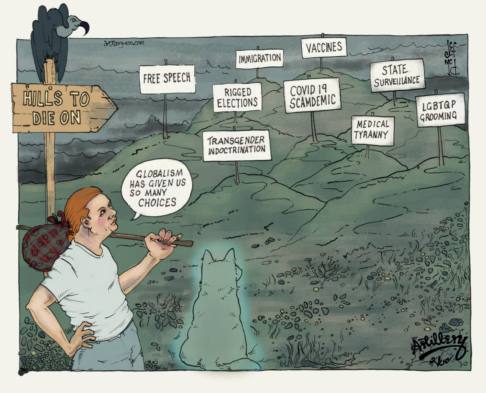

Around May 2020 during one of a bazillion arguments I was having about the Covid19 scam, somebody said to me
'Why'd yoo choose this Hill To Die On?..I like the view, I said
You have to give Klaus Schwab and all the Globalist Despots of the WEF credit where its
due. They've given us plenty of reasons to go full Ceaușescu on them. We're being ruled by demonic psychopaths
who think that they're
beyond the law and untouchable. I wonder where the tipping point is going to be? They rig elections to steal
power, rig science and use it to destroy people lifes and livilhoods, abuse of children, Groom them,
censor free speech so that their lies and propaganda cant be challenged, flood the country with immigrants to
destroy our nations and culture, coerce, bully and threaten us to be injected with toxic gene therapy shite,
hold us
hostage, murder us, brutalise us. Its pretty clear now that they're not going to stop. I wonder where the
tipping
point will be. Ive already said NO a long time ago. The following is a letter written by a veteran of the Gulag,
Alexander
Solzhenitsyn and has come to be more relevant now - in formerly free Western countries than when it was written
in the bowels of the Soviet Union's Gulags. When do
you say NO, enough.
Live Not By Lies. Alexander Solzhenitsyn
"We have so hopelessly ceded our humanity that for the modest handouts of today we are ready to surrender up
all principles, our soul, all the labors of our ancestors, all the prospects of our descendants—anything to
avoid disrupting our meager existence. We have lost our strength, our pride, our passion. We do not even fear a
common nuclear death, do not fear a third world war (perhaps we’ll hide away in some crevice), but fear only to
take a civic stance! We hope only not to stray from the herd, not to set out on our own, and risk suddenly
having to make do without the white bread, the hot water heater, a Moscow residency permit.
the simplest, the most accessible key to our liberation: a personal nonparticipation in lies! Even if all is
covered by lies, even if all is under their rule, let us resist in the smallest way: Let their rule hold not
through me!
For when people renounce lies, lies simply cease to exist. Like parasites, they can only survive when attached
to a person.
But if we shrink away, then let us cease complaining that someone does not let us draw breath—we do it to
ourselves! Let us then cower and hunker down, while our comrades the biologists bring closer the day when our
thoughts can be read and our genes altered."

Live Not By Lies (full text)
Alexander Solzhenitsyn
There was a time when we dared not rustle a whisper. But now we write and read samizdat and, congregating in the smoking rooms of research institutes, heartily complain to each other of all they are muddling up, of all they are dragging us into! There’s that unnecessary bravado around our ventures into space, against the backdrop of ruin and poverty at home; and the buttressing of distant savage regimes; and the kindling of civil wars; and the ill-thought-out cultivation of Mao Zedong (at our expense to boot)—in the end we’ll be the ones sent out against him, and we’ll have to go, what other option will there be? And they put whomever they want on trial, and brand the healthy as mentally ill—and it is always “they,” while we are—helpless.
We are approaching the brink; already a universal spiritual demise is upon us; a physical one is about to flare up and engulf us and our children, while we continue to smile sheepishly and babble:
“But what can we do to stop it? We haven’t the strength.”
We have so hopelessly ceded our humanity that for the modest handouts of today we are ready to surrender up all principles, our soul, all the labors of our ancestors, all the prospects of our descendants—anything to avoid disrupting our meager existence. We have lost our strength, our pride, our passion. We do not even fear a common nuclear death, do not fear a third world war (perhaps we’ll hide away in some crevice), but fear only to take a civic stance! We hope only not to stray from the herd, not to set out on our own, and risk suddenly having to make do without the white bread, the hot water heater, a Moscow residency permit.
We have internalized well the lessons drummed into us by the state; we are forever content and comfortable with its premise: we cannot escape the environment, the social conditions; they shape us, “being determines consciousness.” What have we to do with this? We can do nothing.
But we can do—everything!—even if we comfort and lie to ourselves that this is not so. It is not “they” who are guilty of everything, but we ourselves, only we!
Some will counter: But really, there is nothing to be done! Our mouths are gagged, no one listens to us, no one asks us. How can we make them listen to us?
To make them reconsider—is impossible.
The natural thing would be simply not to reelect them, but there are no re-elections in our country.
In the West they have strikes, protest marches, but we are too cowed, too scared: How does one just give up one’s job, just go out onto the street?
All the other fateful means resorted to over the last century of Russia’s bitter history are even less fitting for us today—true, let’s not fall back on them! Today, when all the axes have hewn what they hacked, when all that was sown has borne fruit, we can see how lost, how drugged were those conceited youths who sought, through terror, bloody uprising, and civil war, to make the country just and content. No thank you, fathers of enlightenment! We now know that the vileness of the means begets the vileness of the result. Let our hands be clean!
So has the circle closed? So is there indeed no way out? So the only thing left to do is wait inertly: What if something just happens by itself?
But it will never come unstuck by itself, if we all, every day, continue to acknowledge, glorify, and strengthen it, if we do not, at the least, recoil from its most vulnerable point.
From lies.
When violence bursts onto the peaceful human condition, its face is flush with self-assurance, it displays on its banner and proclaims: “I am Violence! Make way, step aside, I will crush you!” But violence ages swiftly, a few years pass—and it is no longer sure of itself. To prop itself up, to appear decent, it will without fail call forth its ally—Lies. For violence has nothing to cover itself with but lies, and lies can only persist through violence. And it is not every day and not on every shoulder that violence brings down its heavy hand: It demands of us only a submission to lies, a daily participation in deceit—and this suffices as our fealty.
And therein we find, neglected by us, the simplest, the most accessible key to our liberation: a personal nonparticipation in lies! Even if all is covered by lies, even if all is under their rule, let us resist in the smallest way: Let their rule hold not through me!
And this is the way to break out of the imaginary encirclement of our inertness, the easiest way for us and the most devastating for the lies. For when people renounce lies, lies simply cease to exist. Like parasites, they can only survive when attached to a person.
We are not called upon to step out onto the square and shout out the truth, to say out loud what we think—this is scary, we are not ready. But let us at least refuse to say what we do not think!
This is the way, then, the easiest and most accessible for us given our deep-seated organic cowardice, much easier than (it’s scary even to utter the words) civil disobedience à la Gandhi.
 Our way must be: Never knowingly support lies! Having understood where the lies begin (and many see this line
differently)—step back from that gangrenous edge! Let us not glue back the flaking scales of the Ideology, not
gather back its crumbling bones, nor patch together its decomposing garb, and we will be amazed how swiftly and
helplessly the lies will fall away, and that which is destined to be naked will be exposed as such to the world.
Our way must be: Never knowingly support lies! Having understood where the lies begin (and many see this line
differently)—step back from that gangrenous edge! Let us not glue back the flaking scales of the Ideology, not
gather back its crumbling bones, nor patch together its decomposing garb, and we will be amazed how swiftly and
helplessly the lies will fall away, and that which is destined to be naked will be exposed as such to the world.
And thus, overcoming our temerity, let each man choose: Will he remain a witting servant of the lies (needless to say, not due to natural predisposition, but in order to provide a living for the family, to rear the children in the spirit of lies!), or has the time come for him to stand straight as an honest man, worthy of the respect of his children and contemporaries? And from that day onward he:
· Will not write, sign, nor publish in any way, a single line distorting, so far as he can see, the truth;
· Will not utter such a line in private or in public conversation, nor read it from a crib sheet, nor speak it in the role of educator, canvasser, teacher, actor;
· Will not in painting, sculpture, photograph, technology, or music depict, support, or broadcast a single false thought, a single distortion of the truth as he discerns it;
· Will not cite in writing or in speech a single “guiding” quote for gratification, insurance, for his success at work, unless he fully shares the cited thought and believes that it fits the context precisely;
· Will not be forced to a demonstration or a rally if it runs counter to his desire and his will; will not take up and raise a banner or slogan in which he does not fully believe;
· Will not raise a hand in vote for a proposal which he does not sincerely support; will not vote openly or in secret ballot for a candidate whom he deems dubious or unworthy;
· Will not be impelled to a meeting where a forced and distorted discussion is expected to take place;
· Will at once walk out from a session, meeting, lecture, play, or film as soon as he hears the speaker utter a lie, ideological drivel, or shameless propaganda;
· Will not subscribe to, nor buy in retail, a newspaper or journal that distorts or hides the underlying facts.
This is by no means an exhaustive list of the possible and necessary ways of evading lies. But he who begins to cleanse himself will, with a cleansed eye, easily discern yet other opportunities.
Yes, at first it will not be fair. Someone will have to temporarily lose his job. For the young who seek to live by truth, this will at first severely complicate life, for their tests and quizzes, too, are stuffed with lies, and so choices will have to be made. But there is no loophole left for anyone who seeks to be honest: Not even for a day, not even in the safest technical occupations can he avoid even a single one of the listed choices—to be made in favor of either truth or lies, in favor of spiritual independence or spiritual servility. And as for him who lacks the courage to defend even his own soul: Let him not brag of his progressive views, boast of his status as an academician or a recognized artist, a distinguished citizen or general. Let him say to himself plainly: I am cattle, I am a coward, I seek only warmth and to eat my fill.
For us, who have grown staid over time, even this most moderate path of resistance will be not be easy to set out upon. But how much easier it is than self-immolation or even a hunger strike: Flames will not engulf your body, your eyes will not pop out from the heat, and your family will always have at least a piece of black bread to wash down with a glass of clear water.
Betrayed and deceived by us, did not a great European people—the Czechoslovaks—show us how one can stand down the tanks with bared chest alone, as long as inside it beats a worthy heart?
It will not be an easy path, perhaps, but it is the easiest among those that lie before us. Not an easy choice for the body, but the only one for the soul. No, not an easy path, but then we already have among us people, dozens even, who have for years abided by all these rules, who live by the truth.
And so: We need not be the first to set out on this path, Ours is but to join! The more of us set out together, the thicker our ranks, the easier and shorter will this path be for us all! If we become thousands—they will not cope, they will be unable to touch us. If we will grow to tens of thousands—we will not recognize our country!
But if we shrink away, then let us cease complaining that someone does not let us draw breath—we do it to ourselves! Let us then cower and hunker down, while our comrades the biologists bring closer the day when our thoughts can be read and our genes altered.
And if from this also we shrink away, then we are worthless, hopeless, and it is of us that Pushkin asks with scorn:
Why offer herds their liberation?
.....................
Their heritage each generation
The yoke with jingles, and the whip.
February 12, 1974
Alexander Solzhenitsyn
There was a time when we dared not rustle a whisper. But now we write and read samizdat and, congregating in the smoking rooms of research institutes, heartily complain to each other of all they are muddling up, of all they are dragging us into! There’s that unnecessary bravado around our ventures into space, against the backdrop of ruin and poverty at home; and the buttressing of distant savage regimes; and the kindling of civil wars; and the ill-thought-out cultivation of Mao Zedong (at our expense to boot)—in the end we’ll be the ones sent out against him, and we’ll have to go, what other option will there be? And they put whomever they want on trial, and brand the healthy as mentally ill—and it is always “they,” while we are—helpless.
We are approaching the brink; already a universal spiritual demise is upon us; a physical one is about to flare up and engulf us and our children, while we continue to smile sheepishly and babble:
“But what can we do to stop it? We haven’t the strength.”
We have so hopelessly ceded our humanity that for the modest handouts of today we are ready to surrender up all principles, our soul, all the labors of our ancestors, all the prospects of our descendants—anything to avoid disrupting our meager existence. We have lost our strength, our pride, our passion. We do not even fear a common nuclear death, do not fear a third world war (perhaps we’ll hide away in some crevice), but fear only to take a civic stance! We hope only not to stray from the herd, not to set out on our own, and risk suddenly having to make do without the white bread, the hot water heater, a Moscow residency permit.
We have internalized well the lessons drummed into us by the state; we are forever content and comfortable with its premise: we cannot escape the environment, the social conditions; they shape us, “being determines consciousness.” What have we to do with this? We can do nothing.
But we can do—everything!—even if we comfort and lie to ourselves that this is not so. It is not “they” who are guilty of everything, but we ourselves, only we!
Some will counter: But really, there is nothing to be done! Our mouths are gagged, no one listens to us, no one asks us. How can we make them listen to us?
To make them reconsider—is impossible.
The natural thing would be simply not to reelect them, but there are no re-elections in our country.
In the West they have strikes, protest marches, but we are too cowed, too scared: How does one just give up one’s job, just go out onto the street?
All the other fateful means resorted to over the last century of Russia’s bitter history are even less fitting for us today—true, let’s not fall back on them! Today, when all the axes have hewn what they hacked, when all that was sown has borne fruit, we can see how lost, how drugged were those conceited youths who sought, through terror, bloody uprising, and civil war, to make the country just and content. No thank you, fathers of enlightenment! We now know that the vileness of the means begets the vileness of the result. Let our hands be clean!
So has the circle closed? So is there indeed no way out? So the only thing left to do is wait inertly: What if something just happens by itself?
But it will never come unstuck by itself, if we all, every day, continue to acknowledge, glorify, and strengthen it, if we do not, at the least, recoil from its most vulnerable point.
From lies.
When violence bursts onto the peaceful human condition, its face is flush with self-assurance, it displays on its banner and proclaims: “I am Violence! Make way, step aside, I will crush you!” But violence ages swiftly, a few years pass—and it is no longer sure of itself. To prop itself up, to appear decent, it will without fail call forth its ally—Lies. For violence has nothing to cover itself with but lies, and lies can only persist through violence. And it is not every day and not on every shoulder that violence brings down its heavy hand: It demands of us only a submission to lies, a daily participation in deceit—and this suffices as our fealty.
And therein we find, neglected by us, the simplest, the most accessible key to our liberation: a personal nonparticipation in lies! Even if all is covered by lies, even if all is under their rule, let us resist in the smallest way: Let their rule hold not through me!
And this is the way to break out of the imaginary encirclement of our inertness, the easiest way for us and the most devastating for the lies. For when people renounce lies, lies simply cease to exist. Like parasites, they can only survive when attached to a person.
We are not called upon to step out onto the square and shout out the truth, to say out loud what we think—this is scary, we are not ready. But let us at least refuse to say what we do not think!
This is the way, then, the easiest and most accessible for us given our deep-seated organic cowardice, much easier than (it’s scary even to utter the words) civil disobedience à la Gandhi.
And thus, overcoming our temerity, let each man choose: Will he remain a witting servant of the lies (needless to say, not due to natural predisposition, but in order to provide a living for the family, to rear the children in the spirit of lies!), or has the time come for him to stand straight as an honest man, worthy of the respect of his children and contemporaries? And from that day onward he:
· Will not write, sign, nor publish in any way, a single line distorting, so far as he can see, the truth;
· Will not utter such a line in private or in public conversation, nor read it from a crib sheet, nor speak it in the role of educator, canvasser, teacher, actor;
· Will not in painting, sculpture, photograph, technology, or music depict, support, or broadcast a single false thought, a single distortion of the truth as he discerns it;
· Will not cite in writing or in speech a single “guiding” quote for gratification, insurance, for his success at work, unless he fully shares the cited thought and believes that it fits the context precisely;
· Will not be forced to a demonstration or a rally if it runs counter to his desire and his will; will not take up and raise a banner or slogan in which he does not fully believe;
· Will not raise a hand in vote for a proposal which he does not sincerely support; will not vote openly or in secret ballot for a candidate whom he deems dubious or unworthy;
· Will not be impelled to a meeting where a forced and distorted discussion is expected to take place;
· Will at once walk out from a session, meeting, lecture, play, or film as soon as he hears the speaker utter a lie, ideological drivel, or shameless propaganda;
· Will not subscribe to, nor buy in retail, a newspaper or journal that distorts or hides the underlying facts.
This is by no means an exhaustive list of the possible and necessary ways of evading lies. But he who begins to cleanse himself will, with a cleansed eye, easily discern yet other opportunities.
Yes, at first it will not be fair. Someone will have to temporarily lose his job. For the young who seek to live by truth, this will at first severely complicate life, for their tests and quizzes, too, are stuffed with lies, and so choices will have to be made. But there is no loophole left for anyone who seeks to be honest: Not even for a day, not even in the safest technical occupations can he avoid even a single one of the listed choices—to be made in favor of either truth or lies, in favor of spiritual independence or spiritual servility. And as for him who lacks the courage to defend even his own soul: Let him not brag of his progressive views, boast of his status as an academician or a recognized artist, a distinguished citizen or general. Let him say to himself plainly: I am cattle, I am a coward, I seek only warmth and to eat my fill.
For us, who have grown staid over time, even this most moderate path of resistance will be not be easy to set out upon. But how much easier it is than self-immolation or even a hunger strike: Flames will not engulf your body, your eyes will not pop out from the heat, and your family will always have at least a piece of black bread to wash down with a glass of clear water.
Betrayed and deceived by us, did not a great European people—the Czechoslovaks—show us how one can stand down the tanks with bared chest alone, as long as inside it beats a worthy heart?
It will not be an easy path, perhaps, but it is the easiest among those that lie before us. Not an easy choice for the body, but the only one for the soul. No, not an easy path, but then we already have among us people, dozens even, who have for years abided by all these rules, who live by the truth.
And so: We need not be the first to set out on this path, Ours is but to join! The more of us set out together, the thicker our ranks, the easier and shorter will this path be for us all! If we become thousands—they will not cope, they will be unable to touch us. If we will grow to tens of thousands—we will not recognize our country!
But if we shrink away, then let us cease complaining that someone does not let us draw breath—we do it to ourselves! Let us then cower and hunker down, while our comrades the biologists bring closer the day when our thoughts can be read and our genes altered.
And if from this also we shrink away, then we are worthless, hopeless, and it is of us that Pushkin asks with scorn:
Why offer herds their liberation?
.....................
Their heritage each generation
The yoke with jingles, and the whip.
February 12, 1974
Print Prices:
Standard A3 Print: £65
Fine Art A2 Giclee: £250
Prints are Signed,titled and numbered.